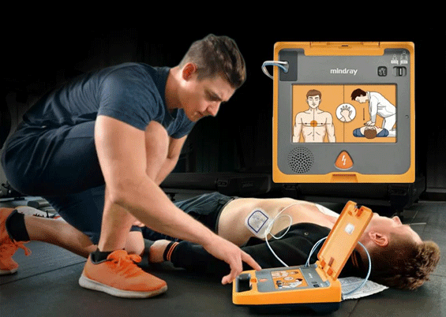
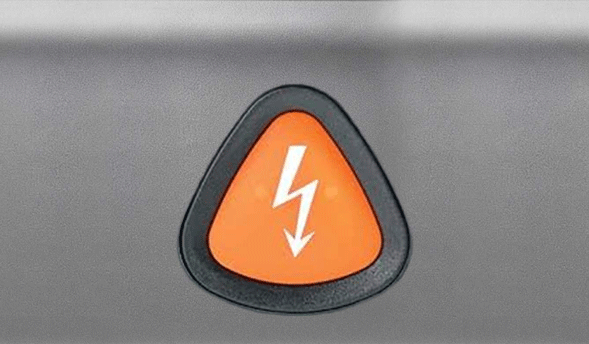
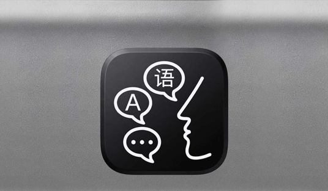
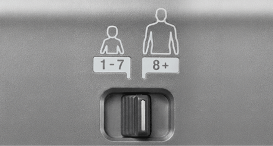

AED membantu pengguna memberikan pertolongan dengan lebih terarah.

Quick Shock
Membantu mempercepat penanganan dalam situasi darurat.

Panduan Suara
Memberikan instruksi langkah demi langkah dalam beberapa bahasa pilihan.

Semua Usia
Aman digunakan untuk orang dewasa maupun anak-anak.

PERTANYAAN TERKAIT AED
AED (Automated External Defibrillator) adalah alat medis portabel yang dirancang untuk menganalisis irama jantung secara otomatis dan memberikan kejutan listrik untuk mengembalikan irama jantung kembali normal pada korban henti jantung mendadak.
Ya, sangat boleh. Alat ini dirancang khusus dengan panduan suara interaktif dan gambar visual yang jelas sehingga dapat dioperasikan oleh orang awam sekalipun tanpa latar belakang medis.
AED tidak boleh digunakan jika korban berada di atas permukaan air/tergenang air, atau jika korban menunjukan tanda-tanda kesadaran, bernapas secara normal, atau orang yang memiliki tanda "Do Not Resuscitate".